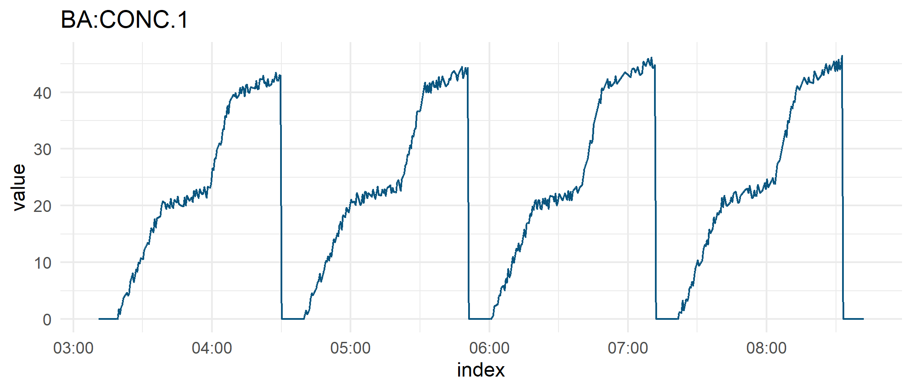

trendminer is an R client for accessing selected endpoints of the TrendMiner API that is documented at http://developer.trendminer.com. TrendMiner is an industrial self-service analytics platform for analyzing, monitoring and predicting time-series based process and asset data.
Usage
Below are some things you can do after installing the package. Check out the introduction vignette and the docs for further details.
Start with fetching an access token which you’ll need for any subsequent API call:
Browse and explore the site/plant structures starting on top with the available root structures:
library(dplyr)
# Get root structures
tm_af_root_structures(token) %>%
select(structureId, name)
#> structureId name
#> 1 783249ff-bfc3-4453-bd6a-27d9e71f03e2 Site Cologne
#> 2 2b66622f-83c7-48e9-9ccc-6dd9214e70c6 Site Barcelona
#> 3 ca12dc39-516d-4217-b7cc-a8d220a32858 Site Grenoble
# Get child structures of Site Grenoble
tm_af_child_structures(token, "ca12dc39-516d-4217-b7cc-a8d220a32858") %>%
select(structureId, name, parentName)
#> structureId name parentName
#> 1 908d5613-b360-4ee7-b36b-02d097594850 Reactor 2 Site Grenoble
#> 2 2cd8f0c6-4bfc-49f9-9c0d-5c878d05eae6 Line 1 Site Grenoble
# Get entire subtree structure underneath Line 1
tm_af_descendant_structures(token, "2cd8f0c6-4bfc-49f9-9c0d-5c878d05eae6") %>%
select(name, parentName, type, tagName)
#> name parentName type tagName
#> 1 Conveyer unit Line 1 ASSET <NA>
#> 2 Pressure polym reactor Line 1 ATTRIBUTE WE-PIC001.PV
#> 3 Feed ratio Line 1 ATTRIBUTE WE-FY001.PV
#> 4 Production grade Line 1 ATTRIBUTE WE-AC001.PV
#> 5 Feed flow Line 1 ATTRIBUTE WE-FC011.PV
#> 6 Reactor temperature Conveyer unit ATTRIBUTE WE-TIC001.PV
#> 7 Flow secondary addition 2 Conveyer unit ATTRIBUTE WE-FC002.PV
#> 8 Conveyer pressure Conveyer unit ATTRIBUTE WE-PIC002.PV
#> 9 Flow secondary addition 1 Conveyer unit ATTRIBUTE WE-FC001.PVSearch for specific assets/tags or retrieve all tags at once
# Retrieve all assets and tags that have "Reactor" in their name
tm_af_search_assets(token, 'name=="*Reactor*"') %>%
select(nodeId, name, type) %>%
head()
#> nodeId name type
#> 1 96b526da-aa76-46cb-8611-9c108303e755 Reactor ASSET
#> 2 065e17e1-7569-49e6-9aea-c30f96081b86 Reactor 2 ASSET
#> 3 f75449bb-d144-40df-9d6a-d34a6a52f96f Reactor Concentration ATTRIBUTE
#> 4 af82c650-bbd5-4b58-9efa-880f205c6402 Reactor Level ATTRIBUTE
#> 5 07a7f300-f90b-458f-b334-3a0d7093d5ff Reactor Temperature ATTRIBUTE
#> 6 f0cb8ec3-bf9b-4eb3-8959-8b179d0e8331 Reactor 1 ASSET
# Fetch all available tags
tm_af_tags(token) %>%
select(name, tagName) %>%
head()
#> name tagName
#> 1 Reactor Concentration BA2:CONC.1
#> 2 Reactor Level BA:LEVEL.1
#> 3 Reactor Concentration BA:CONC.1
#> 4 Reactor Temperature BA:TEMP.1
#> 5 Reactor Status BA:ACTIVE.1
#> 6 Reaction Phase BA:PHASE.1Fetch time series data of a tag:
library(lubridate)
start <- ymd_hms("2019-09-15T03:10:14Z")
end <- ymd_hms("2019-09-15T08:42:15Z")
tag_data <- tm_ts_interpolated_data(token, "BA:CONC.1", start, end, 2)
head(tag_data$timeSeries)
#> index value
#> 1 2019-09-15 03:11:00 0
#> 2 2019-09-15 03:11:02 0
#> 3 2019-09-15 03:11:04 0
#> 4 2019-09-15 03:11:06 0
#> 5 2019-09-15 03:11:08 0
#> 6 2019-09-15 03:11:10 0Visualize fetched time series data:
library(ggplot2)
tag_data$timeSeries %>%
ggplot(aes(index, value)) +
geom_line(color = "#09557f") +
ggtitle(tag_data$tag$tagName) +
theme_minimal()
Authentication
All requests to the TrendMiner API require authentication using a valid Bearer access token that is sent as part of the request headers.
Request tokens are obtained via OAuth2.0 using a resource owner password credentials flow. Any client which likes to interact with the API needs to collect the credentials from the user (username and password) and passes them together with its own client credentials (client ID and client secret) to the TrendMiner server using the tm_token() function. The server responds with an access token which the user needs to use for any subsequent API requests.
User credentials, client credentials and the TrendMiner base URL can be passed as arguments to tm_token() for quick testing in interactive mode. However, it is recommended to call tm_token() without arguments. In this case tm_token() will fetch the credentials and the TrendMiner base URL from the environment variables below which you need to store in .Renviron. You can easily edit .Renviron using usethis::edit_r_environ().